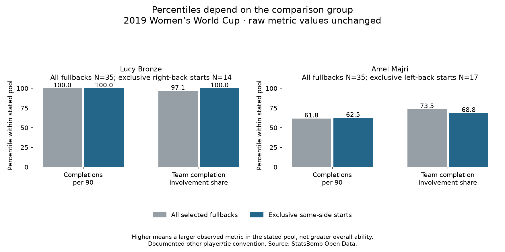

Football analyst training · Recruitment phase · Lesson 71
Where does the number sit among peers?
Read: Soccermatics Lesson 3 — Statistical scouting → Comparison: percentile rankings.
A percentile describes a number's relative position within a named group. It does not change the original measurement.
Our worked example
Majri recorded 30.70 completed eligible passes per 90. Of our 35 fullbacks, one is Majri herself. We compare her with the other 34.
Other players with a lower activity value: 21 Other players compared: 34 21 ÷ 34 ×100 = 61.8 About the 62nd percentile for this activity measure.
There are no ties in this example. This is not her pass completion percentage. In the actual calculation, tied other-player values receive half weight; we use unrounded values.
The completed assignment
We calculated percentiles for passing activity and team involvement across all 35 players, then compared exclusive-side groups: 17 left-back starters and 14 right-back starters. Four mixed-side starters stay in the full group and have no exclusive-side percentile. Here, exclusive side refers only to qualifying fullback starts; other appearances could have different roles.

Bronze has the highest activity value among the selected fullbacks, giving her the 100th percentile on that measure. This is not a perfect pass-success rate or an overall player grade.
The group matters
Majri's team-involvement value stays 10.60%. Its percentile is 73.5 among all fullbacks and 68.8 among the 17 exclusive left-back starters. Different peers produce a different reference point; her passes did not change.
Matching starting side is only one filter. Team style, opponents, difficulty, later role changes and small samples remain relevant. Higher activity or involvement is not automatically a better tactical contribution. We use one explicit percentile convention; software formulas can differ.
Practice: a player's percentile changes after we change the comparison group. Did the player necessarily perform differently?
No. The same value can occupy a different position among different peers. Always show the raw value and pool alongside the percentile.
Run 71_fullback_percentile_comparisons.py in Spyder. Read the 35-player report. Lower/tied/higher counts and pool memberships are saved for inspection. Assisted assignment; ask your teacher about any unclear denominator.